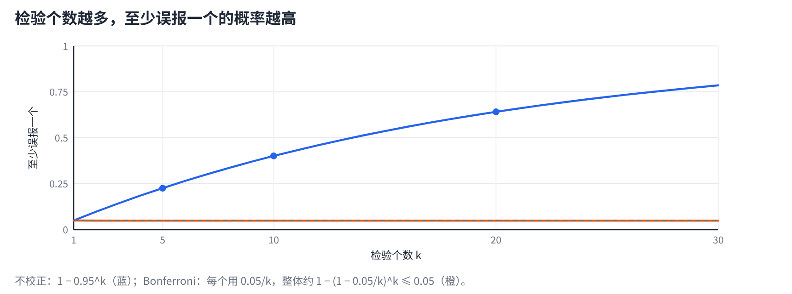
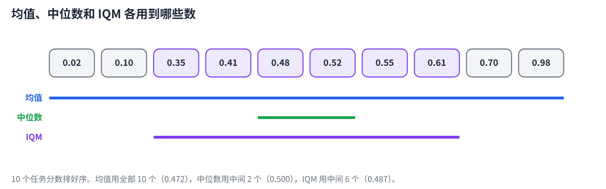
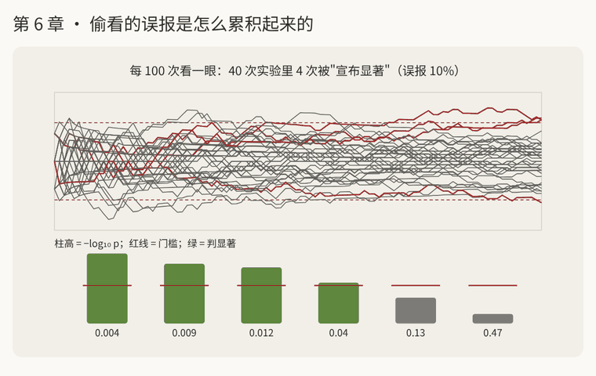

第 6 章 · A/B 判定规则与多重比较：先定规则再测，别偷看，比多了要校正
本地运行
git clone https://github.com/wikieden/math-and-eval-stats
cd math-and-eval-stats/code/notebooks
pip install jupyterlab torch numpy
jupyter lab ch06_ab_rules_multiple_comparisons.ipynb也可以下载后直接用 VS Code 打开 .ipynb 运行。需要 GPU 的章节在 Colab 里选「代码执行程序 → 更改运行时类型 → GPU」。
本章回答：边测边看、一显著就停，为什么不行？20 个任务里有 1 个"显著"算不算数？多任务的结果该用均值、中位数还是别的？题目成组出现时，标准误为什么会被低估？
讲解日期：2026-11-25 · 上一章：第 5 章 Bootstrap 与 Beta 后验 · 下一章：第 7 章 批判地读 loss 曲线和消融表
对应原文：NIST e-Handbook §7.4.7materials/text/web/nist/prc47.txtL100–L112（多重比较方法）、§7.4.7.3prc473.txtL15–L75（Bonferroni）；Agarwal 2021materials/text/papers/rl-statistical-precipice-2108.13264.txtL30–L34、L127–L133、L161（IQM）；Miller 2024 §2.2materials/text/papers/adding-error-bars-to-evals-2411.00640.txtL174–L200（聚类标准误，式 (4)）
本章缩写：FWER = Family-Wise Error Rate（整族 / 错误率：一组检验里至少错一个的概率）；Bonferroni = 以数学家 Carlo Bonferroni 命名的校正；Holm = 以统计学家 Sture Holm 命名的逐步校正；IQM = Interquartile Mean（四分位 / 间 / 均值）；SE = Standard Error（标准误）；CLT = Central Limit Theorem（中心极限定理）。全部缩写见 附录 · 缩写与术语表
讲解
第一步：先定规则再测：偷看会把 5% 的误报变成 19%（2026-11-25）
类比：掷骰子说"出 6 我就赢"，然后一直掷到出 6 为止。 每一次单看都只有 1/6 的机会，但"一直掷到满意为止"，迟早会赢。
偷看（peeking）= 每测一小批就做一次检验，一显著就停下来宣布结果。每次检验单看都是 5% 的误报，但看了 10 次，"至少有一次误报"的概率会累积。
例子（代码模拟：A、B 其实一样，成功率都是 0.7；最多测 100 次）：
| 规则 | 误报率 |
|---|---|
| 每测 10 次看一眼，显著就停 | 0.188 |
| 只在第 100 次看一次 | 0.049 |
开测前要写下来的规则：
- 主要指标（成功率？完成时间？）和比较的方向；
- 每组测多少次（按第 3 章的样本量公式定）；
- α、用什么检验、要不要校正；
- 什么情况下提前停（如果要，用专门的序贯检验方法，阈值要更严）。
一句话：边测边看、一显著就停，误报率会从 5% 涨到 19%；样本量和判定规则要在开测前写死。
第二步：比得越多，越容易碰到"显著"（2026-11-25）
类比：20 个人每人掷一次硬币连出 5 个正面的概率很小，但"20 个人里有人做到"的概率不小。
做 k 个独立检验、每个都在 α = 0.05 上判：
| 检验个数 k | 至少误报一个 |
|---|---|
| 1 | 0.050 |
| 5 | 0.226 |
| 10 | 0.401 |
| 20 | 0.642 |
例子（模拟：10 个任务，两个模型其实一样，每任务各测 50 次）：平均每轮有 0.52 个任务被判成"显著"。只挑那个"显著"的任务写进报告，就是在报噪声。

图 6-1 · 不校正时 FWER 随 k 迅速上升；Bonferroni 校正后压在 5% 以下一句话：k 个检验至少误报一个的概率是 1 − 0.95^k；20 个任务不校正，有 64% 的概率碰到至少一个假的"显著"。
第三步：Bonferroni 和 Holm：把门槛调严（2026-11-25）
类比：要求每个嫌疑人都证据确凿，整体冤案率才压得住。
- Bonferroni（NIST §7.4.7.3 L15–L75）：m 个检验，每个用 α/m 当门槛。简单、对任何依赖结构都成立，但偏保守。
- Holm（逐步收紧的 Bonferroni）：p 值从小到大排，第 i 个（从 0 数）和 α/(m − i) 比；一旦有一个不过，后面全部不过。FWER 同样 ≤ α，但比 Bonferroni 检出得多。
例子（编的 6 个 p 值，α = 0.05）：
| p 值 | 0.004 | 0.009 | 0.012 | 0.040 | 0.130 | 0.470 |
|---|---|---|---|---|---|---|
| 不校正（< 0.05） | ✓ | ✓ | ✓ | ✓ | ||
| Bonferroni（< 0.05/6 = 0.0083） | ✓ | |||||
| Holm 门槛 | 0.0083 | 0.0100 | 0.0125 | 0.0167 | — | — |
| Holm | ✓ | ✓ | ✓ | ✗（停） |
Holm 在这组数据上多检出 2 个，FWER 仍然控制在 5%。
场景代码：statsmodels 一行做多重比较校正（真实库的写法；本书环境没装 statsmodels，没跑过）：
from statsmodels.stats.multitest import multipletests
reject, p_adj, _, _ = multipletests([0.004, 0.009, 0.012, 0.040, 0.130, 0.470], alpha=0.05, method="holm")
一句话：Bonferroni 每个用 α/m；Holm 从小到大逐个用 α/(m − i)，同样控制整体误报，检出更多。
第四步：多任务汇总：IQM 比均值稳，比中位数省样本（2026-11-25）
类比：评委打分去掉最高分和最低分再平均。
多任务结果汇总成一个数时：
- 均值：被少数极端任务带偏（一个任务 0.98，一个任务 0.02，就能拉动整体）；
- 中位数：稳，但只用了中间一两个数，方差大，需要更多运行；
- IQM（Agarwal 2021 L130–L134、L161）：排序后去掉最低 25% 和最高 25%，剩下的取平均。既不被极端值左右，又用了一半的数据。
例子（编的 10 个任务分数：0.02, 0.10, 0.35, 0.41, 0.48, 0.52, 0.55, 0.61, 0.70, 0.98）：
| 汇总方式 | 值 |
|---|---|
| 均值 | 0.472 |
| 中位数 | 0.500 |
| IQM（中间 6 个的平均） | 0.487 |
Agarwal 建议同时报 IQM 和它的分层 bootstrap 区间（第 5 章），再加一张"表现分布图"（performance profile），而不是只报一个均值。

图 6-2 · 10 个任务排成一排：均值用全部、中位数只用中间两个、IQM 用中间 6 个一句话：IQM = 去掉两头各 25% 再平均；多任务汇总时比均值稳、比中位数省样本，还要配区间。
第五步：题目成组出现：聚类标准误（2026-11-25）
类比：问同一个人 4 道题，比问 4 个不同的人各 1 道题，得到的独立信息少得多。
很多评测的题目是成组的：同一篇文章的几道阅读题、同一个场景的几个子任务、同一个初始条件的几次重复。组内结果相关，CLT（"n 个独立样本"）的假设被打破，普通标准误会被低估（Miller §2.2 L174–L182）。
公式（Miller 式 (4)，L186–L190）：
三重求和是"同组两两的协方差"；组内完全相关时，一组相当于一个样本；完全不相关时退回普通 SE（L192–L196）。
例子（编的：5 篇文章、每篇 4 道题）：
| 文章 | 4 道题 |
|---|---|
| 1 | 1 1 1 1 |
| 2 | 0 0 0 0 |
| 3 | 1 1 1 0 |
| 4 | 0 0 1 0 |
| 5 | 1 1 1 1 |
普通 SE 0.1095，聚类 SE 0.1817，大了 1.66 倍。Miller 在真实评测上看到最多 3 倍（L198）。
一句话：题目成组时组内相关，普通 SE 会低估；用式 (4) 把同组协方差加回去，或者按组 bootstrap。
动画演示：偷看的误报是怎么累积起来的

可交互版：animations/06-ab-rules-multiple-comparisons.html（滑块调"每测几次看一眼"和检验个数 k）。
怎么看：
- 上半：40 条随机游走的 z 值曲线（两策略其实一样），水平线是 ±1.96；某条曲线一碰线就被标红"宣布显著"（第一步）；
- 看得越勤，碰线的曲线越多，右上角的误报率跟着涨；
- 下半：k 个任务的 p 值柱子，红线分别是 0.05、Bonferroni、Holm 的门槛（第二、三步）。
练习与作答记录
题 1（第二步 FWER）：一份消融表比了 8 个变体和基线，每个都在 0.05 上判。8 个变体其实都没用时，至少有一个"显著"的概率是多少？
作答：（待作答）
题 2（第三步 Holm）：4 个 p 值：0.010、0.013、0.020、0.060。分别用 Bonferroni 和 Holm（α = 0.05）判，各检出几个？
作答：（待作答）
题 3（第一、五步）：同事每天早上看一次 A/B 的结果，第 6 天显著了就宣布上线；而且每个初始条件重复跑了 5 次，他把 5 次当成 5 个独立样本。指出这两个问题各会让结论偏向哪边。
作答：（待作答）
口诀
先写规则再开测，偷看一次多一分误报；
比得越多越容易撞上，一减零九五的 k 次方；
Bonferroni 除以 m，Holm 从小到大逐个放宽；
多任务报 IQM 加区间，题目成组用聚类标准误。
本章复习卡片
ST39（偷看为什么不行、开测前要定哪些规则）、ST40（FWER 公式与 Bonferroni / Holm）、ST41（IQM 的定义与为什么用它）、ST42（聚类标准误为什么更大）。练习做完后，按答错、卡住的地方补上。
附录 · 延伸阅读
留给以后深入学习用，不影响本章主线。★ 是建议先读的。
推荐阅读
| 读什么 | 读哪里 | 读它为了什么 |
|---|---|---|
| ★ Agarwal 等《Deep RL at the Edge of the Statistical Precipice》 | §3–4；表 1 L140–L170 | 少量运行下的不可靠做法和替代方案：分层 bootstrap、IQM、表现分布、改进概率 |
| ★ Miller《Adding Error Bars to Evals》 | §2.2 L174–L200；附录 A | 聚类标准误的公式与推导 |
| NIST e-Handbook §7.4.7 | prc47.txt–prc474.txt |
Tukey、Scheffé、Bonferroni 各适合什么比较 |
| Kress-Gazit 等 | L170–L185 | 评测流程本身怎么设计才不引入偏差 |
数学原理
- Bonferroni 不等式：\(P(\cup_i A_i) \le \sum_i P(A_i)\)。每个检验误报率 α/m，至少一个误报的概率 ≤ m · α/m = α，不需要检验之间独立。
- Holm 为什么也控制 FWER：假设有 m₀ 个真的零假设，它们中最小的那个 p 值要过的门槛最多是 α/m₀；由 Bonferroni 不等式，任何一个被错误拒绝的概率 ≤ α。
- 偷看的数学：多次检验的 z 值是同一条随机游走在不同时刻的值，相互相关但不完全相关；跨过门槛的累计概率随检查次数增加而上升（极限情况下必然跨过）。
公式清单
| 公式 | 意思 |
|---|---|
| \(\text{FWER} = 1 - (1 - \alpha)^k\) | k 个独立检验至少误报一个 |
| Bonferroni：\(p_i < \alpha/m\) | 每个检验的门槛 |
| Holm：\(p_{(i)} < \alpha/(m - i)\)，\(i = 0, 1, \ldots\) | 从小到大逐步收紧 |
| IQM = 中间 50% 的均值 | 四分位间均值 |
| \(SE_{\text{clustered}} = (SE_{\text{CLT}}^2 + \frac1{n^2}\sum_c\sum_{i\ne j}\ldots)^{1/2}\) | Miller 式 (4) |
代码对照：把本章的数字用代码算一遍
代码在仓库本地
math-and-eval-stats/solutions/chapter-code/ch06_ab_rules.py，配套测试tests/test_ch06.py：
bash cd math-and-eval-stats/solutions/chapter-code uv run python ch06_ab_rules.py uv run pytest tests/test_ch06.py
讲义 ↔ 代码：
| 讲义 | 公式 | 写法 | 跑出来 |
|---|---|---|---|
| 第一步 偷看 | 模拟 | peeking_false_positive() |
0.188 / 0.049 |
| 第二步 FWER | 1 − 0.95^k | family_error(20) |
0.642 |
| 第二步 模拟 | 10 个任务 | null_tasks_significant() |
平均 0.52 个 |
| 第三步 校正 | Bonferroni / Holm | bonferroni(P_VALUES)、holm(P_VALUES) |
检出 1 / 3 个 |
| 第四步 IQM | 中间 50% | iqm(TASK_SCORES) |
0.487 |
| 第五步 聚类 | 式 (4) | clustered_se(clusters) |
0.1095 → 0.1817 |
关键几行：
order = np.argsort(pvals)
for i, j in enumerate(order): # Holm：从最小的 p 值开始
if pvals[j] < alpha / (m - i): reject[j] = True
else: break # 一旦不过，后面全部不过
for c in scores_by_cluster: # 聚类 SE：每组内两两交叉项之和
d = np.asarray(c) - sbar
cross += d.sum() ** 2 - (d**2).sum() # (Σd)² − Σd² = Σ_{i≠j} d_i d_j
代码里才看得到的 3 件事：
- 交叉项的小技巧：\(\sum_{i\ne j}d_id_j = (\sum d)^2 - \sum d^2\)，不用写双重循环。
- IQM 在样本数不能被 4 整除时的取法：10 个数去掉"最低 25%"是 2.5 个，代码取
floor和ceil，实际去掉两头各 2 个、用中间 6 个；rliable 用的是按比例截尾平均，结果略有差别。 - 偷看模拟是向量化的：一次生成 2 万轮 × 100 次的结果矩阵，每 10 列做一次检验，
hit_any |= sig记录"有没有哪次显著过"。
自己改一改（不影响练习答案）：
- 把
peeking_false_positive的every从 10 改成 1（每测一次就看），误报率涨到多少？ - 把
clusters里每篇文章的 4 道题都改成一半对一半错，聚类 SE 和普通 SE 还差多少？